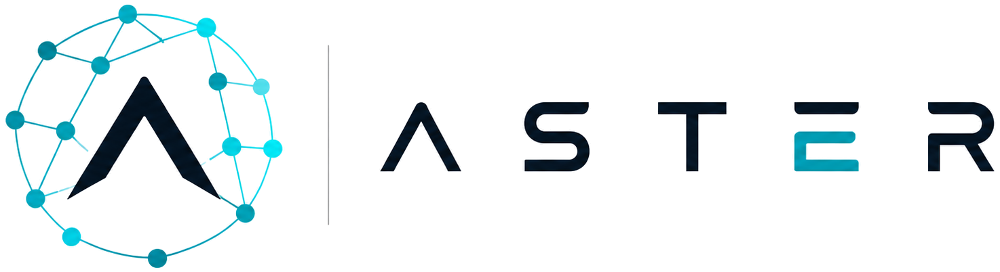

The project intelligence and orchestration layer that enables teams of developers and AI coding agents to build large software systems in parallel — without losing architectural control.
AI can generate code quickly. The harder problem is keeping many developers and agents aligned to one system design.
Each developer and agent sees only part of the project.
Local AI decisions slowly diverge from the intended system.
Agents duplicate logic, collide on interfaces and break dependencies.
Fast coding can move faster than requirements and acceptance criteria.
Speed is lost later in review, rework and integration.
Coding agents are becoming powerful executors, but large projects still need a shared architectural brain.
Each one is well understood on its own. Together they open a layer that nobody owns yet.
Coding agents now produce real modules, not snippets. Execution capacity is no longer the constraint.
Tooling assumes one person and one repo. Nothing coordinates ten agents against one architecture.
A common protocol now carries project knowledge into any agent, so the intelligence layer can stay agent-agnostic.
The executor layer is solved. The coordination layer is not.
It turns project intent into structured, agent-ready development context.
Aster maintains the map. Coding agents execute within clearly defined boundaries.
The result: parallel AI development without turning the codebase into a collection of disconnected prompts.
One map in, many agents out, everything verified on the way back.
Remove the loop and you have prompts. Keep it and you have an architecture that survives the speed.
Every contract, operation and event link in the system, held as one live graph instead of tribal knowledge.
Spine, satellite and shared contracts are separated, so a change to the centre is visible before it is merged.
Every screen on every platform, sequenced into delivery waves against real dependencies.
A screen that names the operation behind it can be handed to an agent today.
A screen that names none is one somebody can draw and nobody can build. Aster finds them, and they are never evenly spread.
Scope questions get answered before a sprint starts, not during review.
Every status enum the contracts declare gets a state model behind it — states, transitions, guards and reversals.
A verdict with no reason gets rediscovered the hard way. Decisions live next to the thing they decide.
Tables, columns and cross-schema keys, derived from the contracts — so an agent writing a migration already knows the shape it has to match, and which relationships it must not break.
Written, part written and derivable are distinguished, so an agent is told what to create and what already exists.
One screen, fully specified: wireframe, regions, components, the operations behind it and the flows that reach it.
Regions, components and operations are counted — bounded work, not an open brief.
Each screen knows what reaches it and what it goes on to, so side effects are visible.
The same record a reviewer reads is the context an agent is given.
Aster ships as an MCP server. The agent calls it from the IDE and gets the exact slice of the map its task needs — contracts, ER model, state machines, screen spec — instead of guessing from the repository.
Exact context plus enforced gates is what makes AI-assisted enterprise software realistic — not just fast prototypes.
Agent-agnostic: every improvement in the model layer makes Aster more valuable.
Strong at generating code inside one repository and one developer's session.
No system-level memory.
Track tickets and people. The architecture lives in documents beside them.
Not machine-readable.
Capture intent well, then drift from the code the moment it ships.
Snapshot, not state.
System-level context, kept current, served to many agents and many people at once.
The coordination layer.
The defensible asset is the map itself: the longer a team builds on Aster, the more of their system only Aster knows.
Hundreds of screens, dozens of services, one architecture — and drift they can already feel.
Many projects, thin architecture capacity, direct margin from parallel agent throughput.
Governance, audit and architectural control are procurement requirements, not features.
Budget already exists — it is spent on architects, rework and integration. Aster moves that spend, it does not create a new line.
Sizing to be added from your own bottom-up model: target accounts × seats × price.
A subscription per active project map — the unit customers already think in.
Reviewers, architects and product owners who read and approve the map.
Context served over MCP grows with agent throughput, so revenue tracks adoption.
Private deployment, audit retention and governance controls.
Working product, running against a real multi-platform project — the screens in this deck are live.
Contracts, domain, data, delivery and decisions surfaces shipped and in daily use.
Design partners, usage and revenue to be filled in with your current figures.
Harden the MCP layer and the write-back path, so the map stays current without human upkeep.
A small cohort of multi-platform teams running Aster end to end on live delivery.
First enterprise motion: architects and delivery leads as the buying centre.
Raising [amount] to reach [milestone].